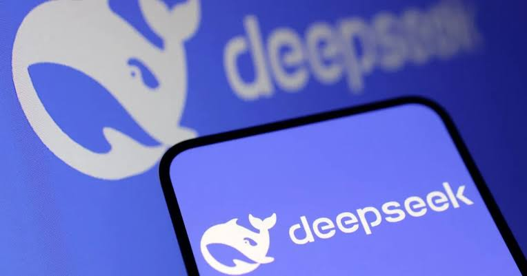

Caso Real - DeepSeek
DeepSeek es un chatbot de inteligencia artificial de origen chino que lanzó su modelo R1. La compañía afirma que su tecnología es comparable a la de las principales empresas de IA en Estados Unidos, pero con una inversión significativamente menor. La controversia escaló cuando múltiples gobiernos comenzaron a evaluar medidas restrictivas en respuesta a informes sobre presuntas vulneraciones a la privacidad.
El fundamento de las prohibiciones se basa en una investigación de la empresa de ciberseguridad canadiense Feroot Security, la cual reveló que DeepSeek contiene código oculto con la capacidad de enviar datos de los usuarios directamente a empresas controladas por el gobierno chino.

Vínculos Gubernamentales: Se identificó que la aplicación puede transferir datos a CMPassport.com, el portal oficial de gestión de cuentas de China Mobile, una empresa estatal china. China Mobile es un actor controversial que fue excluido de la Bolsa de Nueva York en 2021 e incluida en la lista de amenazas a la seguridad nacional por la FCC de EE. UU. en 2022.
Recolección de Datos Amplia: DeepSeek recolecta información en tres niveles: datos proporcionados por el usuario (mensajes, audios, archivos), datos obtenidos automáticamente (dirección IP, información del dispositivo, patrones de escritura) y datos de terceros (información vinculada a la cuenta de Google utilizada para iniciar sesión).
Rastreo Extendido: Además, se descubrió que la herramienta web de DeepSeek crea una "huella digital" que le permite rastrear la actividad del usuario incluso fuera de su plataforma. Este hallazgo fue calificado por expertos como un "riesgo inédito en aplicaciones de IA".
El caso DeepSeek sirve como un ejemplo contundente de por qué la privacidad y la seguridad de los datos deben ser consideraciones primordiales en la era de la inteligencia artificial, especialmente cuando la tecnología proviene de actores extranjeros con posibles vínculos estatales La IA, por su naturaleza, requiere vastas cantidades de datos para funcionar. La reflexión esencial aquí es que, a medida que la IA se vuelve más sofisticada, su capacidad para monitorear y perfilar a los usuarios se amplifica drásticamente.
DeepSeek no solo recopilaba mensajes directos, sino también datos pasivos como la dirección IP y patrones de escritura. El hecho de que pudiera crear una "huella digital" para rastrear la actividad fuera de su propia plataforma demuestra que las herramientas de IA pueden convertirse en herramientas de vigilancia persistente. Si esta información puede ser transferida a servidores bajo control gubernamental (como se sospecha en este caso), el riesgo para la seguridad personal, corporativa y nacional se vuelve incalculable.